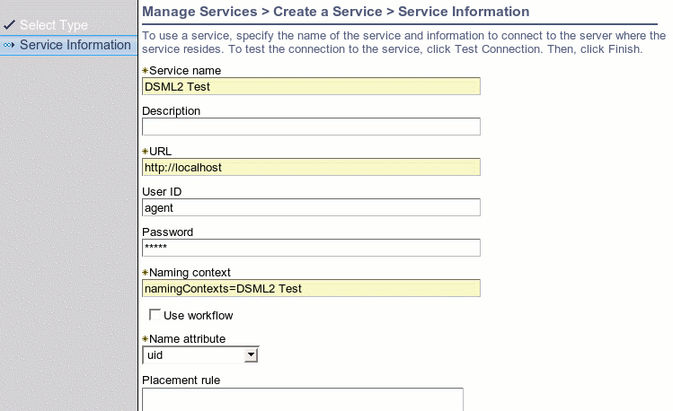

|
|
|

Directory Service Markup Language Version 2 JNDI Provider Example
The program DSML2DirContextTest.java
illustrates how to communicate with ISIM using the Directory Service Markup
Language Version 2 (DSMLv2) Java Naming and Directory Interface (JNDI)
provider. Comments within the program describe it's logic and a description of
how to set up the supporting data files and run it is provided here.
Building the Example
Build the examples by following the instructions given in Building the Examples.
The
build script will create the jar file
${ITIM_HOME}/extensions/{RELEASE_VERSION}/lib/examples.jar. This contains the
class file for Java classes for this example.
The example is a stand-alone program so there are no changes required to the
application server to enable it to work.
Running the Example
Within the ISIM user interface, add a service instance of type 'IDI Data Feed'.
This service type uses the DSMLv2 protocol to send and receive requests. It is
not actually necessary to use IBM Directory Integrator (IDI) with it.
Enter the values for the service shown in Table 1.
Table 1 Parameters for ISIM Server Instance
|
Name |
Value |
Description |
|
Service Name |
<pick a name> |
This name is purely descriptive and is for use in the user interface. |
|
URL |
<arbitrary> |
Although not used in this example, a non-null value is required to conform with the schema. A value is required because of the more common usage of service definitions to communicate outwardly from ISIM to a remote agent. |
|
User ID |
agent |
This is the value for the principal used for authentication of incoming requests. |
|
Password |
agent |
This is the value for the password used for authentication of incoming requests. |
|
Naming Context |
namingContexts=DSML2 Test |
This is used to identify the service to associate imported data with. The value, including the single space between 'DSML2' and 'Test', must be a case-sensitive match to the value sent by the JNDI client |
|
Use Workflow |
Off (False) |
This can be either on or off but it simpler to have it off. |
|
Name Attribute |
uid |
This is the attribute that will be used to do lookups on. This should be unique for all people within ISIM. If there are multiple people found with the same value then an error will be returned. |
An example screen shot is shown in Figure 1.

Figure 1 Screen Shot of Service Detail Form
Edit the file runJNDITest.cmd (runJNDITest.sh on unix) to set your java interpreter
and classpath correctly.
In the file test.properties, enter the
values shown in Table 2 to connect to the ISIM server.
Table 2 Parameters for Connection to ISIM Server
|
Name |
Value |
Description |
|
java.naming.factory.initial |
com.ibm.dsml2.jndi.DSML2InitialContextFactory |
The factory class for the DSMLv2 JNDI implementation provided with ISIM. |
|
java.naming.provider.url |
http://<host>:<port>/itim/console/dsml2_event_handler |
We will start with http and then try https later in the example. The host is either the dns name or ip address of the machine. The port is the port that the application server is listening on. The path part of the url identities the web application and servlet. |
|
java.naming.security.principal |
agent |
The user id entered in the service form definition. |
|
java.naming.security.credentials |
agent |
The user id entered in the service form definition. |
The value for the JNDI factory class
com.ibm.dsml2.jndi.DSML2InitialContextFactory leads to the instantiation of the
DSMLv2 provider by the JNDI framework. This provider transports DSMLv2
text directly over a HTTP or HTTPS transport.
Appropiate values for data are given in the file test_data.properties. This file does
not need to be modified but you should look at it to compare it to the
variables in the example code and the values inserted into the ISIM data store
by the program.
To run the program use the command line parameters shown in Table 3.
Table 3 Command Line Parameters to run the example program. The
description column provides help to verify that the effect of the command
within the ISIM user interface.
Table 3 Command Line Parameters to Run the Example Program
|
Command Line |
Description |
runJNDITest -op add |
Adds person with cn 'wilma flintstone' to ISIM. Go to My Organization | Manage People to check that Wilma was added successfully. |
runJNDITest -op lookup |
Looks up the person just added in the directory. Check standard out from the client program to see whether the person was found and the information is correct. There are other output print statements present that can be ignored or used to better understand the program. |
runJNDITest -op |
Change the value of Wilma's cn to 'wilma d flinstone'. Go to Wilma's personal information to verify that the new cn (Full Name) is correct. |
runJNDITest -op |
Delete Wilma from the ISIM data store. Wilma should no longer appear in the list of people in My Organization. |
runJNDITest -op DSE |
Does a root DSE Search as defined in RFC 2251, which provides information about the server. Check for the information printed to standard out. |
Description of the Code
The only imports required for communication with ISIM are the JNDI interfaces:
import javax.naming.NamingException;
import javax.naming.NamingEnumeration;
import javax.naming.directory.*;
A connection is made in the method getDirContext() by reading the properties in the file test.properties into a Properties object and constructing an
InitialDirContext object that represents the
connection.
private DirContext getDirContext() throws
NamingException,
IOException {
Properties connectorProps = new Properties();
InputStream is = new FileInputStream(PROPS);
connectorProps.load(is);
return new
InitialDirContext(connectorProps);
}
There is no need to reference any DSMLv2 implementation specific classes in the
code. In that way, properties for connection using another provider, such
as DAML or LDAP, can be used without changes to the code.
The method testCreateSubcontext() creates a person with the following lines of
code:
String
dn = name + "," + namingContext;
context.createSubcontext(dn, attributes);
The distinguished name used is a combination of the entity name and a naming
context identifying the service. The attributes are read from the data
file.
The DSMLv2 implementation supports lookup of entities, whereas the DAML
provider does not. The method testLookup() looks up the entry previously
inserted in the directory and prints out the attribute values:
Attributes attributes =
((DirContext)context.lookup(dn)).getAttributes("");
assertTrue("attributes == null", attributes !=
null);
NamingEnumeration enum = attributes.getAll();
while (enum.hasMore()) {
Attribute attribute =
(Attribute)enum.next();
System.out.println("id:
" + attribute.getID() + ", values: ");
NamingEnumeration values =
attribute.getAll();
while (values.hasMore()) {
System.out.println("\t" + values.next());
}
}
Searches returning more than a single result are not supported by the DSMLv2
implementation.
Also the DSMLv2 provider supports a root DSE search, whereas the DAML provider
did not. This is useful for a ping facility or to find out the version of
the server. The method testSearchRootDSE() demonstrates this.
The methods testModifyPerson() and testDestroySubcontext() demonstrate modifying and
deleting a person, respectivly.
Running the Example with a Secure Protocol
This section describes how to run the example with HTTP over a secure socket
connection (ie with HTTPS).
The DSMLv2 JNDI implementation uses the standard Java Secure Sockets Extension
(JSSE) mechanism in conjuction with the Java URL protocol handling mechanism.
This means that the secure protocol details are handled by an
implementation of a standard interface in a pluggable way. Implementations are
provided, among others, by Sun and IBM. Details need not be understood
beyond the basic concepts of certificate management and knowing the appropriate
system properties to set. However, the details can be found at the Sun JSSE page.
In the file test.properties, change the protocol to https for the
java.naming.provider.url property and change the port to the appropriate value
(default is 9443 for WAS and 7002 for Weblogic).
java.naming.provider.url=https://localhost:9443/enrole/dsml2_event_handler
You must use a Java virtual machine (JVM) with a JSSE implementation
installed. This is provided out of the box with Websphere so the easiest
path is to set the JAVA variable in the runJNDITest script to use that JVM.
If using a machine with a standard java implementation, you can install
JSSE from Sun's site at java.sun.com/products/jsse.
However, with the JDK 1.4 it is provided out of the box so it is not
necessary to do anything special when using a JDK1.4 based client.
There are several properties that must be set to enable use of HTTPS.
These are described in Table 4. They should be specified in the
command line as written in the runJNDITest scripts. The settings provided
in the example script files may be adequate for many test environments.
Table 4 HTTPS System Properties
|
Property |
Value |
Description |
|
java.protocol.handler.pkgs |
com.ibm.net.ssl.internal.www.protocol |
This value is the IBM implementation shipped with Websphere. Not required if using JDK 1.4. |
|
javax.net.ssl.trustStore |
${WAS_HOME}/etc/DummyServerTrustFile.jks |
This is the default trust file shipped with Websphere. It is not recommended for production. |
|
javax.net.ssl.trustStorePassword |
WebAS |
This is the default for the trust file shipped with Websphere. It is not recommended for production. |
Troubleshooting
Hostname is Wrong
If using a dummy certificate you may receive an error with the message
'Hostname is Wrong'. To avoid this obtain a proper certificate
appropriate for the machine housing your application server. For testing
purposes, however, you may add an entry to the hosts file matching the IP of
the host to the name in the certificate and then use this as if it were a DNS
name. For example, by adding the following entry to /etc/hosts:
9.168.6.100
jserver
where 'jserver' is the name of the host in the trust certificate.